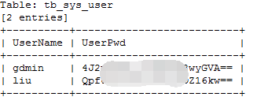
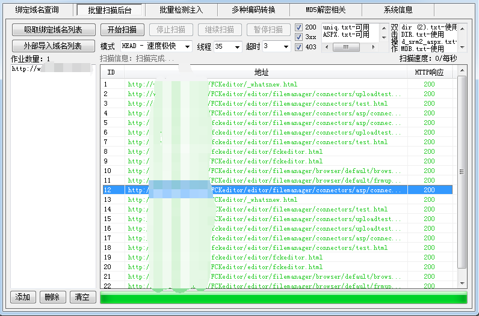
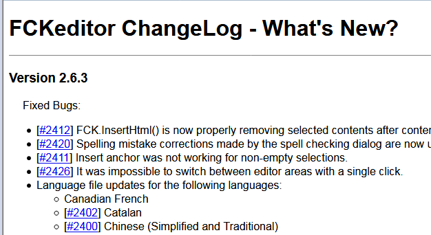
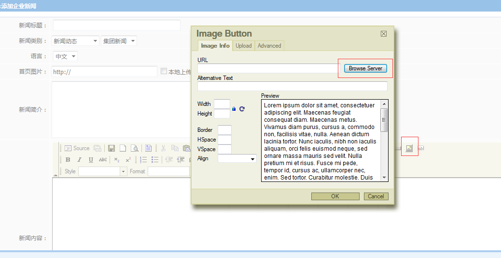
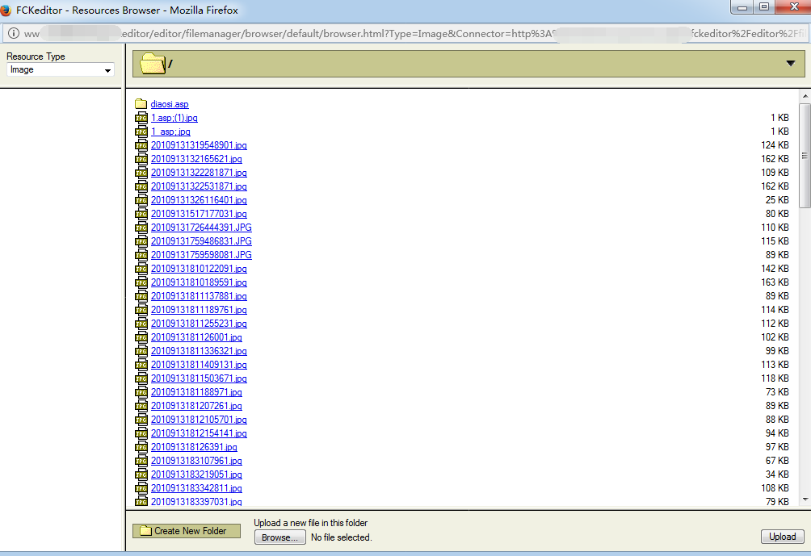
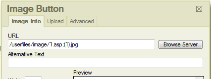

0x00.开始
链接http://eaxmple.website/News/NewsList.aspx?blmid=1&slmid=3存在盲注漏洞。扔进Sqlmap，耗时较长，且会出错。

此处UserName第一个是admin并不是gdmin。幸好UserPwd没出错。
密码看似是BASE64，解完是乱码，需要转换成16进制，提出字符，正好是32位，md5解密。
后台地址/admin/login.aspx
0x01.上传点
Sqlmap扫描很慢，扫描同时扫描了下常用目录。发现FCKeditor上传点。

http://eaxmple.website/FCKeditor/_whatsnew.html知FCKeditor版本

上传点有两个
http://eaxmple.website/fckeditor/editor/filemanager/connectors/test.htmlhttp://eaxmple.website/FCKeditor/editor/filemanager/connectors/uploadtest.html
不可直接上传asp，可上传图片，探测知服务器是IIS6.0，有解析漏洞，可上传
1.asp;.jpg1.asp/1.jpg1.asp%00.jpg
等形式的文件绕过限制，有验证文件头的可添加GIF89a绕过。
但是上传后并没有返回路径，使用自带页面获取current folder，提示没有登录，没有返回任何xml。
使用FCKeditor/editor/filemanager/browser/default/connectors/asp/connector.asp?Command=GetFoldersAndFiles&Type=Image&CurrentFolder=/
显示404
尝试编辑器里上传后的路径/userfiles/image/没有找到文件。
去找网站里图片的地址/images/xxx.png
这里由于经验少，不知道访问的文件应该是全名1.asp;.jpg，尝试1.asp并没有找到文件，还以为没有上传成功，导致放弃了该路线
0x02.后台Getshell
用解密后的结果登录进后台
刚开始找到一个图片上传点，限制了文件名必须以图片的后缀名为结尾，并且会重命名：1.asp;.jpg就会变成2017xxxxxxxx.jpg
而且无法添加文件夹，导致该处不能使用。
看看其他功能，找找有没有可用点。
找到编辑器，即FCKeditor。找到上传图片功能，本想着这下能找到上传后的路径。结果发现可直接浏览网站文件。

发现自己之前传的shell静静地躺在那。。。。。。

不过有意思的是传的1.asp;.jpg变成了1_asp;.jpg,但是重复上传的第二个文件1.asp;(1).jpg并没有变。(FCKeditor特性。。。)
而且第一个文件夹应该是前人的shell。。。。。。
选择文件后，得知路径，直接菜刀连接，Getshell
